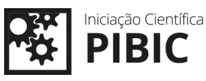

Sobre o Aplicativo
O (aplicativo) é um projeto de Iniciação Científica com ênfase no reconhecimento ótico de caracteres.
A aplicação é um sistema de monitoramento de veículos que verifica automóveis
por meio do reconhecimento ótico de placas.

Aluno Bolsista:
Augusto Zanardi Creppe
augusto.creppe@unesp.br
Orientador:
Prof. Dr. A. Nilceu Marana
nilceu.marana@unesp.br